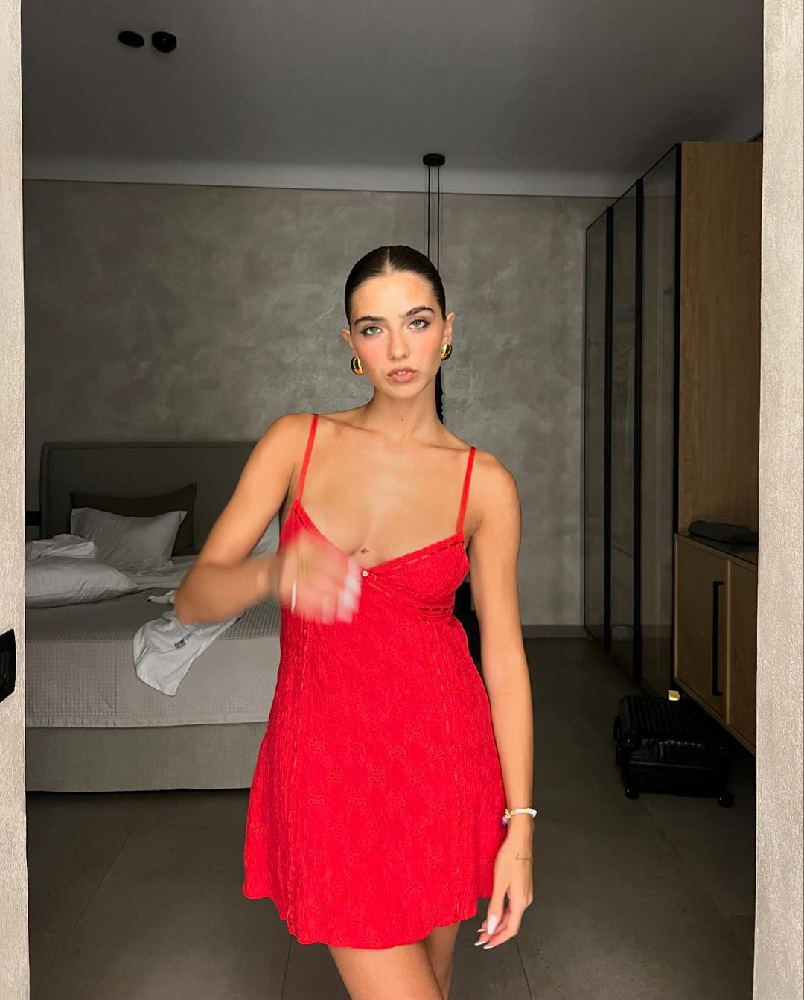
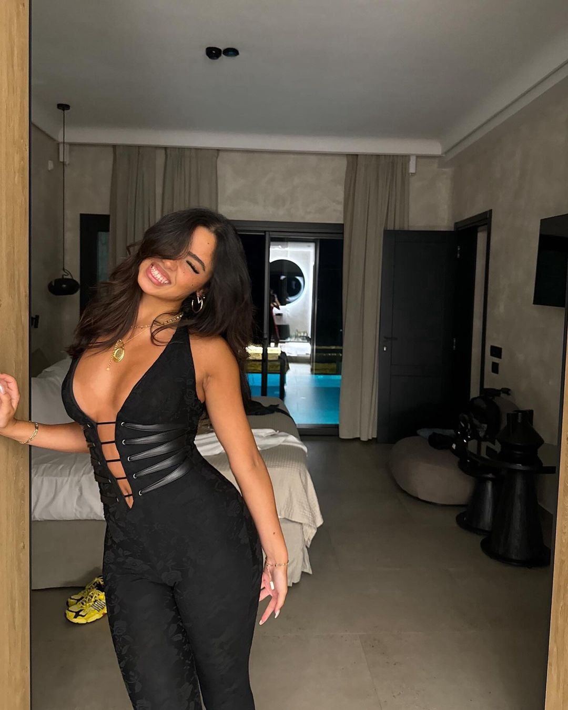
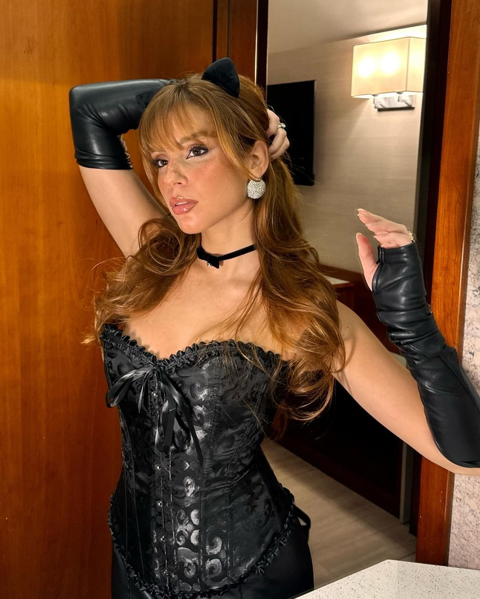
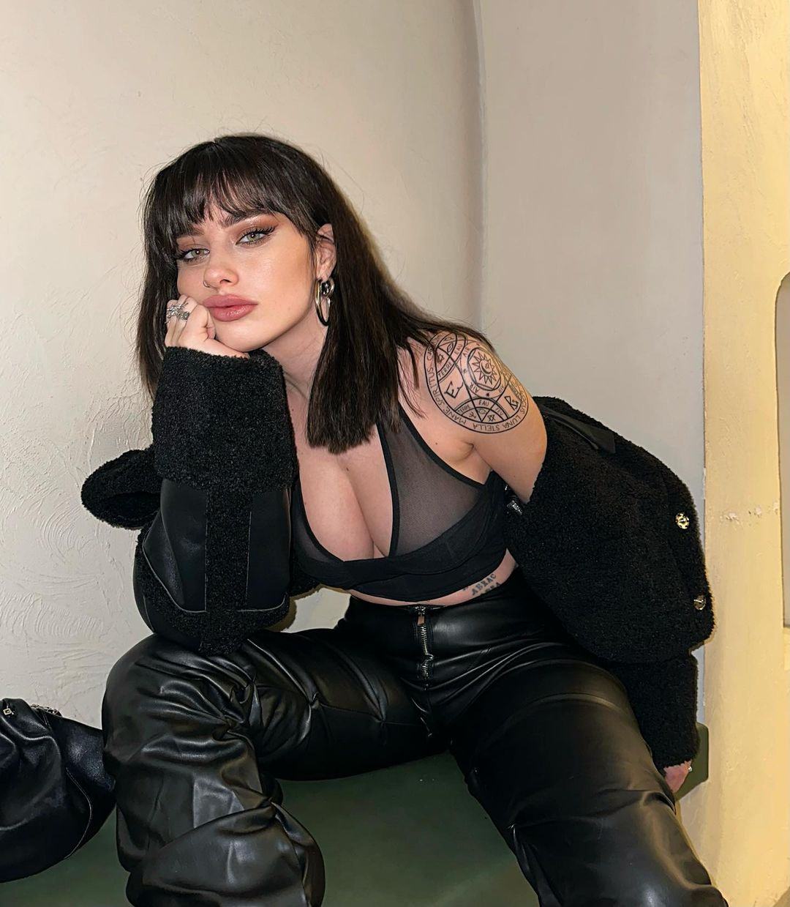

In the digital age, social media platforms like TikTok have become central to how people connect, create, and consume content. While TikTok offers entertainment, inspiration, and education, the platform also presents risks, particularly when it comes to following certain influencers. Among these risks is the potential harm caused by an overemphasis on beauty and perfection, often perpetuated by female TikTok creators. For some, consuming this content can lead to unrealistic expectations, negative self-image, and even mental health struggles.
TikTok thrives on short, engaging videos that grab attention instantly, and many female creators on the platform achieve fame through aesthetically pleasing content. They often showcase beauty, fashion, fitness, or lifestyle routines that appeal to viewers striving for an idealized version of themselves. Their polished appearances and curated content may seem harmless or even aspirational, but these portrayals are rarely representative of real life.
One of the most significant dangers of following TikTok girls is the promotion of unattainable beauty standards. Many influencers rely on professional-grade makeup, filters, and even cosmetic procedures to achieve the flawless looks they present. TikTok’s built-in editing tools, such as face-smoothing filters and augmented reality effects, further distort reality.
For impressionable viewers, especially teenagers, this constant exposure to perfection can foster feelings of inadequacy. They may begin to compare themselves to influencers, forgetting that much of what they see online is highly curated and edited. This comparison trap often leads to dissatisfaction with one’s own appearance, fueling a cycle of low self-esteem and body image issues.
The impact of consuming idealized content isn’t just superficial; it can have profound psychological consequences. Studies have shown that excessive use of social media platforms like TikTok is linked to higher rates of anxiety, depression, and disordered eating. When young girls and women, in particular, feel pressured to emulate the beauty or lifestyle of TikTok influencers, they may resort to harmful behaviors, such as extreme dieting, over-exercising, or even cosmetic interventions.
Moreover, the dopamine rush from engaging with influencer content—liking, commenting, or striving to imitate them—can lead to addictive behavior. Viewers may find themselves scrolling endlessly, chasing validation or inspiration while neglecting their real-world relationships and responsibilities.
Another danger of following TikTok girls lies in the inauthenticity of much of their content. Influencers often project an image of effortless beauty and success, hiding the effort, cost, and stress that go into maintaining their online personas. This lack of transparency can create false expectations among viewers, who may feel frustrated when they fail to achieve similar results.
For instance, viewers might not realize that many influencers benefit from financial resources, professional photographers, and stylists that enhance their content. Without acknowledging these privileges, influencers risk perpetuating a false narrative that beauty and success are easily attainable.
Following TikTok girls can be entertaining and inspiring, but it’s important to recognize the potential dangers of consuming idealized content. Unrealistic beauty standards, mental health struggles, and the trap of inauthenticity are just some of the risks associated with this behavior. By fostering a more critical and balanced approach to social media, viewers can protect themselves from its harmful effects and focus on building a positive self-image grounded in reality.
Back to Home